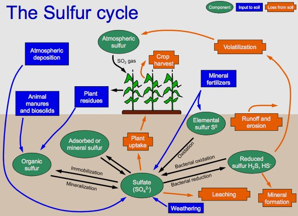
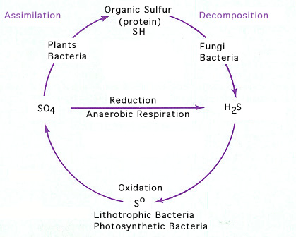

My Future School | Revolutionary Digital Learning Platform
Sulphur Cycle
Diagrams & Flow charts:


Theory & Explanation:
The sulfur cycle is the collection of processes by which sulfur moves to and from minerals (including the waterways) and living systems. Such biogeochemical cycles are important in geology because they affect many minerals. Biochemical cycles are also important for life because sulfur is an essential element, being a constituent of many proteins and cofactors.
Steps of the sulfur cycle are:
Mineralization of organic sulfur into inorganic forms, such as hydrogen sulfide (H2S), elemental sulfur, as well as sulfide minerals.
Oxidation of hydrogen sulfide, sulfide, and elemental sulfur (S) to sulfate (SO42−).
Reduction of sulfate to sulfide.
Incorporation of sulfide into organic compounds (including metal-containing derivatives).
Structure of 3'-phosphoadenosine-5'-phosphosulfate, a key intermediate in the sulfur cycle.
These are often termed as follows:
Assimilative sulfate reduction in which sulfate (SO42−) is reduced by plants, fungi and various prokaryotes. The oxidation states of sulfur are +6 in sulfate and –2 in R–SH.
Desulfurization in which organic molecules containing sulfur can be desulfurized, producing hydrogen sulfide gas (H2S, oxidation state = –2). An analogous process for organic nitrogen compounds is deamination.
Oxidation of hydrogen sulfide produces elemental sulfur (S8), oxidation state = 0. This reaction occurs in the photosynthetic green and purple sulfur bacteria and some chemolithotrophs. Often the elemental sulfur is stored as polysulfides.
Oxidation in elemental sulfur by sulfur oxidizers produces sulfate.
Dissimilative sulfur reduction in which elemental sulfur can be reduced to hydrogen sulfide.
Dissimilative sulfate reduction in which sulfate reducers generate hydrogen sulfide from sulfate.